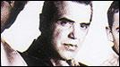
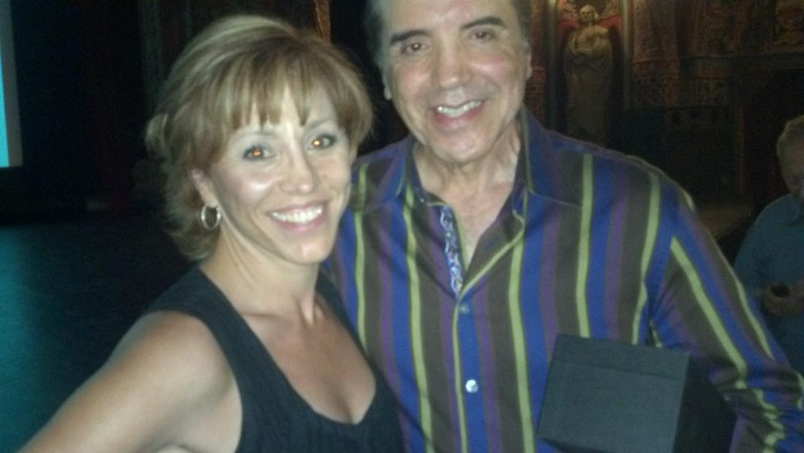

Chazz Palminteri
Chazz and I auditioned for a small play at the 13th street theatre in Manhattan in the 80’s He would go on to write, direct and star in the one man show A Bronx Tale – get spotted by Robert DeNiro – who made the movie with him and its truly the stuff that Hollywood legends are made of!
|
Bronx-born and raised Chazz Palminteri was a natural choice to continue the long line of prominent Italian actors in the film industry. In the tradition set forth in the 1970s by such icons as director Martin Scorsese and actors Robert DeNiro, Al Pacino and Joe Pesci, Palminteri has brought grit, muscle and an evocative realism to the sidewalks of his New York neighborhood, violent as they are and were.  Born in 1952, Palmintieri grew up in a tough area of the Bronx and it gave young Calogero (Palminteri’s given first name) the life lessons that would later prove very useful to his career. He started out pursuing his craft in studying at the Actor’s Studio with Lee Straussberg. He appeared off-Broadway in the early 1980s while paying his dues as a singer in his own band.Well known for A BRONX TALE, Palminteri originally wrote the script for the stage and performed it as a one-man show in Los Angeles. It became the hottest property in Hollywood since ROCKY. Mr. Palminteri was offered over a million dollars to walk away from the project and with $200.00 left in the bank he refused. He wanted to play Sonny and write the screenplay. One night Robert DeNiro walked in to see the show and as they say “the rest is history.” He then moved the production to New York, where it played for four sold-out months and earned him nominations for the New York Outer Critics Circle for both acting and writing. While in New York he completed the screenplay of A BRONX TALE and soon found himself starring opposite Robert DeNiro, who chose the script for his directorial debut. Chazz has more than 50 movies to his credit including The Usual Suspects, Bullets Over Broadway (Academy Award nomination), Analyze This, Hurlyburly, Mulholland Falls, Faithful (screenplay also written by Chazz Palminteri), Poolhall Junkies, The Perez Family, Jade, Diabolique, Down to Earth and A Guide to Recognizing Your Saints. Recent films include Final Recourse, Mighty Fine starring Andie MacDowell, Yonkers Joe, Jolene and The Dukes. He has also directed the HBO series “Oz” (episode, “Unnatural Disasters”), Showtime’s “Women vs.Men” and the feature film Noel, starring Susan Sarandon, Penelope Cruz, Robin Williams and Paul Walker. He appeared on the New York stage in the play The Resistible Rise of Arturo Ui starring with Al Pacino, John Goodman, Steve Buscemi and Billy Crudup. Chazz is a member of the Actors Studio in NYC. Chazz received the 1996 Leadership in Entertainment Award from the Coalition of Italo-American Association, Inc. and was honored by President Clinton with a Special Achievement Award for the Performing Arts from the National Italian American Foundation in Washington, D.C. Chazz currently resides in Weschester County, NY with his lovely wife, Gianna and their two children, Dante & Gabriella. |

Free · live on Zoom every Sunday
The Secret Pitch Formula
Join Forbes live for the Pitch Secrets Masterclass. Over 80,000 people have learned the 7-second hook, the three pitch patterns behind $2.5 billion in sales, and how to close without sounding salesy. Free, with a gift worth $500 for registering.
Sundays, 2 p.m. PT / 5 p.m. ET. Registration and the Zoom link are at pitchsecretstraining.com.